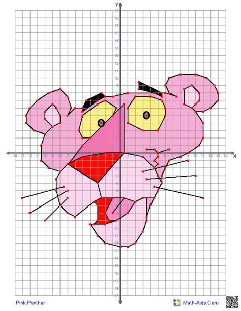

En esta sección encontraras 3 actividades para desarrollar.
¡Buena suerte!
En esta sección encontraras 3 actividades para desarrollar.
¡Buena suerte!
Agiliza tu mente y organiza los ángulos desde 0° hasta 360°.

Obra publicada con Licencia Creative Commons Reconocimiento Compartir igual 4.0